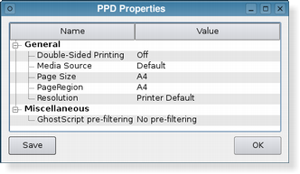

| Home · All Classes · Modules · QSS HELP · QSS 案例 · VER007 HOME |
该QPrintDialog中类提供用于指定打印机的配置对话框。More...
该QPrintDialog中类提供用于指定打印机的配置对话框。
该对话框允许用户更改文件相关的设置，如纸张大小和方向，打印（彩色或灰阶）类型，页数范围，以及要打印的副本数。
还提供控制，以使用户能够从现有的打印机，包括任何已配置网络打印机进行选择。
通常情况下， QPrintDialog中对象与构造QPrinter对象，并使用所执行的exec_（）函数。
QPrintDialog printDialog(printer, parent); if (printDialog.exec() == QDialog.Accepted) { // print ... }
如果对话框被用户接受，则QPrinter对象被正确配置打印。
 |
 |
打印机对话框（在PLASTIQUE风格如上图所示）可以访问常用的印刷性能。在使用CUPS打印系统的X11平台，为每个可用的打印机的设置可以通过对话框的修改Properties按下按钮。
在Windows和Mac OS X ，则使用本机打印对话框，这意味着一些QWidget和QDialog在对话框中设置的属性不会被尊重。在Mac OS X上的本机打印对话框不支持设置打印机选项，即setOptions（）和setOption（ ）没有任何效果。
在Qt 4.4 ，它是可以使用的静态函数，以显示在Mac OS X上的这片已经不再在Qt的4.5的支持。如果你想要这个功能，使用QPrintDialog.open（ ） 。
该parent的说法，如果不是没有，原因self通过Qt的，而不是PyQt的拥有。
构造一个新的模态对话框的打印机为给定的printer用给定的parent。
该parent的说法，如果不是没有，原因self通过Qt的，而不是PyQt的拥有。
构造一个打印对话框给定的parent。
当用户接受在打印对话框中设置的值，这个信号被发射。该printer参数包括该设置被应用到打印机。
从重新实现QDialog.done（ ） 。
关闭对话框，并将其结果代码result。如果显示此对话框exec_（ ） ， （）完成将导致本地事件循环来完成，并exec_（ ）返回result。
See also QDialog.done（ ） 。
从重新实现QAbstractPrintDialog.exec（ ） 。
这是一个重载函数。
在打开的对话框并连接其accepted（）信号到由指定的槽receiver和member。
该信号会从插槽中断开时，关闭对话框。
此功能被引入Qt的4.5 。
设置给定option被启用，如果on是真的，否则，清除给定的option。
See also options和testOption（ ） 。
从重新实现QWidget.setVisible（ ） 。
返回True如果给定的option被启用，否则返回False 。
See also options和setOption（ ） 。
这是该信号的默认超载。
| PyQt 4.10.3 for X11 | Copyright © Riverbank Computing Ltd and Nokia 2012 | Qt 4.8.5 |